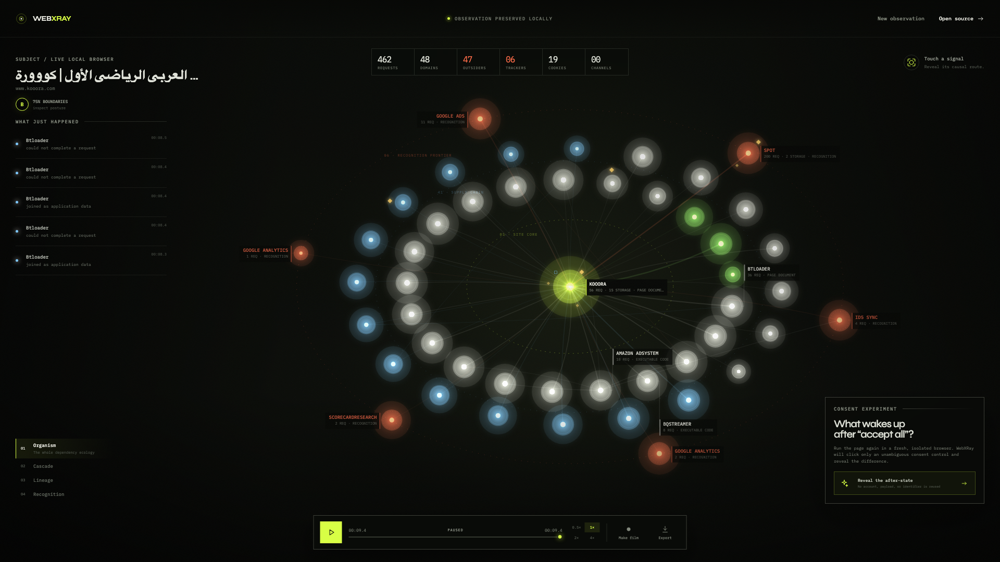
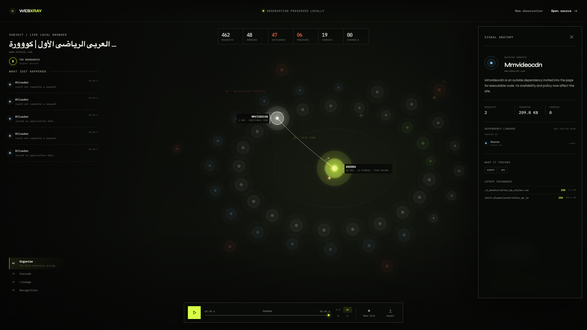

Organism
What belongs to the site, and what orbits outside it?
Local browser observatory / zero telemetry
Turn one load into a living causal map. Watch first-party code invite CDNs, tag managers wake analytics, cookies change, and trackers settle into orbit.

01 — THE PROBLEM
A modern site is a supply chain. First-party scripts invite services, services invite other services, and recognition can continue long after the visible page has appeared.
WebXRay reconstructs that chain from a clean Chromium context and makes every signal inspectable, replayable, and exportable.
02 — THE INSTRUMENT
01 / WHO IS HERE?
Site core, non-recognition supply chain, and recognition frontier settle into deterministic orbits. Hundreds of requests collapse into weighted relationships.
What belongs to the site, and what orbits outside it?
When did each service wake up during the load?
Who invited whom through redirects and sanitized initiators?
Which relationships can recognize a visit across time or context?
03 — CAUSAL FOCUS
Select or hover a service and unrelated noise recedes. The complete causal neighborhood—inviter, service, descendants, storage, and recognition evidence—comes forward.

04 — PRIVACY BOUNDARY
No telemetry. No account. No hosted backend. No cloud persistence.
WebXRay binds to 127.0.0.1 by default and launches an isolated browser context. Its evidence
model deliberately excludes bodies, page contents, credentials, fragments, query values, cookie values,
and WebSocket payloads.
DELIBERATELY EXCLUDED
05 — FIELD WORK
Start with an HTTP or HTTPS address in a fresh, isolated Chromium context.
Switch lenses, inspect services, replay the load, and optionally compare consent aftershock.
Save sanitized JSON, a standalone HTML report, or a self-playing WebM forensic film.
06 — START OBSERVING
Requires Node.js 22+, npm, and Chrome or Chromium.
npm ci
npm run devOpen http://127.0.0.1:4178, then run a target or choose the deterministic 8-second demo.

WEBXRAY / LOCAL-FIRST WEB OBSERVATORY